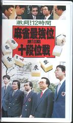

Mahjan riddleｓ 牌謎 。
（71）メモリアル１
先般、日本プロ麻雀連盟所属の椎名大介氏が今年11月２日に急逝した。
個人的には、つきあいどころか面識もない。しかし若いとき名古屋に住んでいたこと（σ(-_-)もむかし名古屋に住んでいた）。小島さん（小島武夫＝jと縁があって麻雀団体に加入したという事（σ(-_-)も若いとｆC小島さんにちと縁があった）、若いときイケイケぶんぶんの麻雀だった（σ(-_-)なんか、」いまでも....）などで、なんとなく親しみを感じていた。
近代麻雀の記事に寄れば、死因はは急性クモ膜下出血で享年45才とか。う〜ん、まだ若いのに....
ふと思い出して、むかしのビデオをひっぱりだしてきた。いまから10年前の第10期・十段位戦決勝戦のもの。

右から２番目が椎名大介氏。
この椎名氏は、牌謎に属するクイズもいくつか作っていょ@椎名氏をしのび、そのいくつかを紹介する（全作品を承知しているわけではないので、知ってる範囲内）。
メモリアル１
、どれかを引けばテンパイするという一上聴型。この一上聴、万子を引けば万子マチに、索子を引けば索子マチになる。さてどのようなであろうか。（by SI-NA）
解答